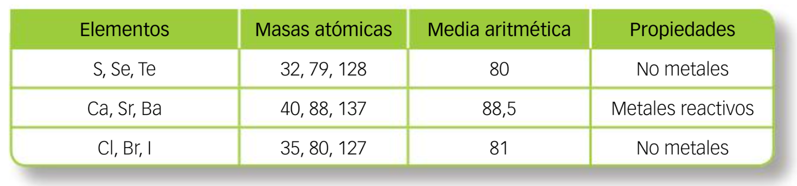
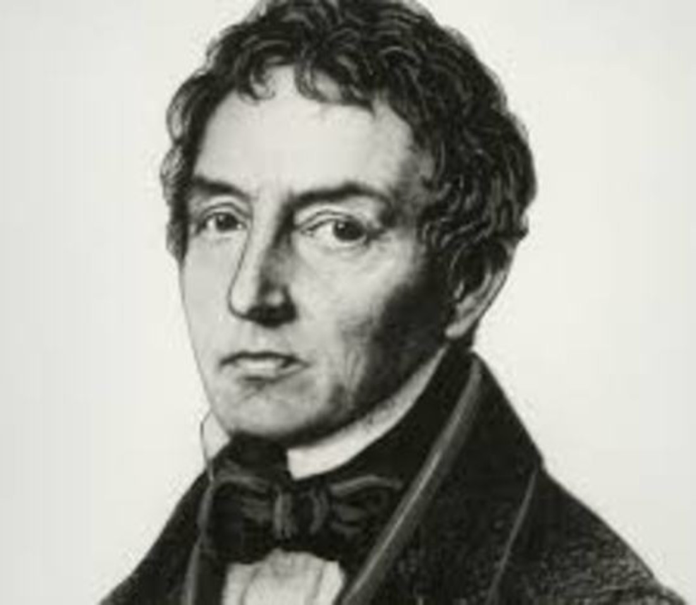
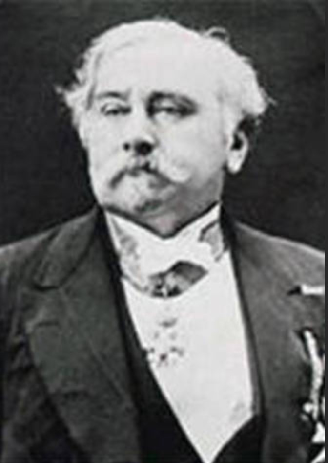
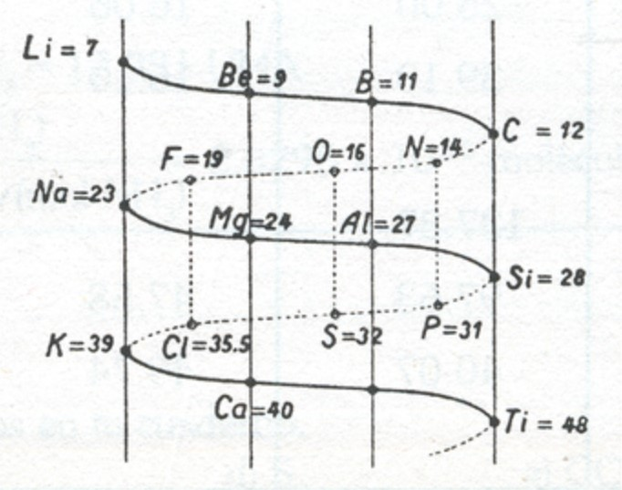
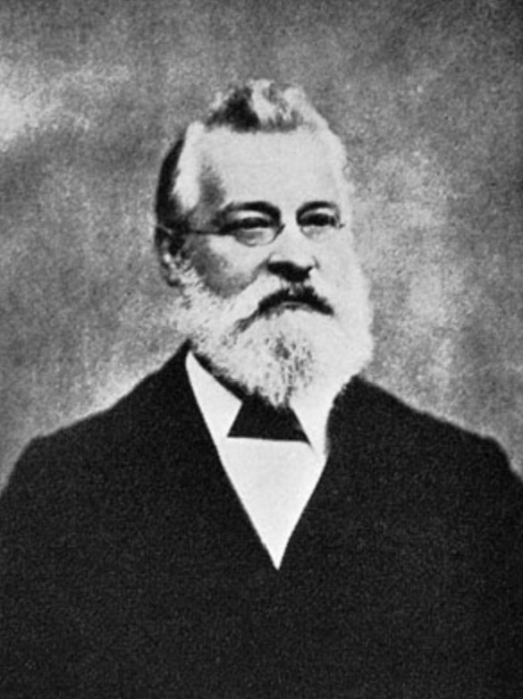
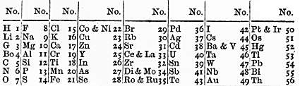
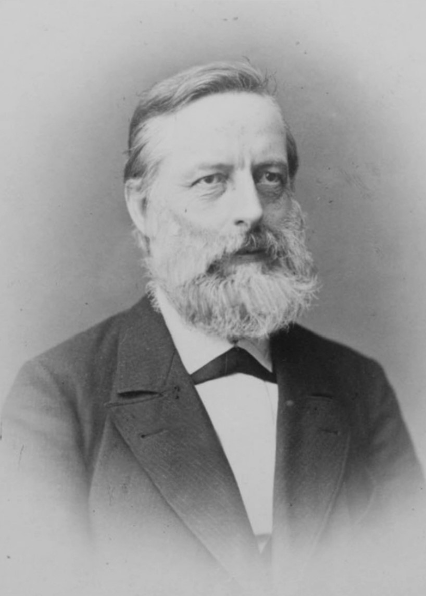

Los elementos químicos que conocemos actualmente se han ido descubriendo de forma progresiva a lo largo de la historia. Metales como el oro, la plata, el cobre, el hierro, el plomo, el estaño y el mercurio eran ya conocidos y utilizados en la Antigüedad. El primer elemento químico descubierto científicamente fue el fósforo (Henning Brandt, 1669), y eso que iba buscando el oro a partir de la orina. 😁
Robert Boyle, en el siglo XVII estableció la siguiente definición de elemento químico:
Un elemento químico es aquella sustancia que no puede ser descompuesta en otras sustancias más simples por métodos químicos.
Hoy sabemos que el signo de identidad de un elemento químico es el número atómico (Z) y que cada elemento tiene unas propiedades características que los diferencian de otro.
A mediados del siglo XIX se conocían unos 60 elementos. Actualmente se conocen 118 elementos, de los cuales 92 son naturales. Los 26 restantes se han producido de forma artificial, mediante reacciones nucleares y no están presentes en la naturaleza (aunque hay controversia en este aspecto).
Según se iban descubriendo nuevos elementos y se comparaban con los ya existentes, era fácil de identificar que algunos tenían propiedades similares entre sí. Sin embargo, otros eran muy diferentes.
La primera clasificación de los elementos fue hecha por Lavoisier y los dividió en metales y no metales.
{kind=link}
Hacia la mitad del siglo XIX se habían descubierto un gran número de elementos químicos y se conocían sus masas atómicas relativas y muchas de sus propiedades. Era necesaria, por tanto, una clasificación que permitiera agrupar aquellos elementos que presentaban similitudes en sus propiedades físicas y químicas para así poder compararlas con los elementos ya conocidos. Este conocimiento permitiría a los científicos predecir las propiedades, todavía no caracterizadas o la existencia de elementos que faltaban por descubrir.
La primera clasificación "seria" fue realizada en 1829 por Johann Döbereiner. Se basaba en la existencia de grupos de tres elementos, tríadas que presentaban analogías en sus propiedades físicas y químicas. Al colocarlos en orden creciente de sus masas atómicas se observaba que la masa del átomo central era la media aritmética de la masa de los otros dos. Las tríadas de Döbereiner aparecen en la siguiente tabla:

Observa que las tríadas de Döbereiner se corresponden con los elementos de los grupos 16, 2 y 17 del sistema periódico actual.
Döbereiner intentó encontrar más tríadas, pero no lo consiguió. Por eso, la Ley de las Tríadas fue desechada, ya que solo se podía aplicar a 9 de los 54 elementos químicos que se conocían en ese momento.
El siguiente intento de clasificación lo realizó Alexandre-Emile Béguyer de Chancourtois en 1862. Su trabajo se basó en el diseño del “tornillo telúrico” donde colocó los elementos en orden creciente de sus masas atómicas, sobre una espiral descendente, encontrando que los elementos semejantes se situaban sobre las mismas generatrices del cilindro.
En 1864, John Newlands elaboró su propia clasificación periódica. Descubrió que sí se ordenaban los elementos en orden creciente de masas atómicas y líneas horizontales de siete, las propiedades de los elementos de las líneas verticales que coincidían eran semejantes, reflejando lo que llamó la “Ley de las Octavas”. Observa que las octavas de Newlands coinciden con los periodos segundo y tercero actuales y que su clasificación englobaba las tríadas de Döbereiner, pero no funcionaba de modo global, pues no servía para elementos de masas atómicas mayores.
La tabla periódica de Mendeleiev, la ley periódica.
En 1869 el científico alemán Lothar Meyer y el científico ruso Dimitri Mendeleiev, trabajando por separado llegaron a las mismas conclusiones y elaboraron una tabla periódica basada en la ley periódica.
Ley periódica: cuando los elementos se organizan en orden creciente de sus masas atómicas, algunas propiedades se repiten periódicamente.
La tabla periódica de Meyer se organizaba en orden creciente de volúmenes atómicos y las de Mendeleiev en orden creciente de masas atómicas, llegando a ambos al mismo resultado.
Mendeleiev, basándose en la ley periódica, dejó espacios en blanco para elementos que estaban todavía por descubrir. Esos huecos correspondían a elementos de masas atómicas 44, escandio; 68, galio; 72 germanio y 100, tecnecio. Además, predijo un gran número de propiedades en de estos elementos.
También corrigió los valores de algunas masas atómicas, ya que éstas no concordaban con lo que con la que les correspondían, según la ley periódica. Entre los elementos a los que corrigió sus masas atómicas estaban el indio y el uranio. Cuando se mejoraron las técnicas experimentales se comprobó que los cálculos realizados por Mendeleiev eran exactos.
La tabla periódica de Mendeleiev presentaba 3 problemas.
- Mendeleiev no previó un grupo formado por los gases nobles y se negaba a aceptar unos elementos que no fueran capaces de reaccionar y formar compuestos. Cuando se descubrieron el helio y el argón, William Ramsay, descubridor de este último, les asignó su posición en un nuevo grupo entre los halógenos y los alcalinos. La ley periódica fue capaz de predecir la existencia de los otros elementos del grupo: neón, criptón, xenón y radón. Cuando estos se descubrieron, Mendeleiev cambió su opinión y consideró que Ramsey había ayudado a reforzar la ley periódica.
- La tabla de Mendeleiev no situaba los lantánidos y los actínidos.
- Existían 3 grupos de elementos Ar/K, Co/Ni y Te/I, que si se situaban en orden creciente de sus masas atómicas, no cumplían la condición de que elementos con propiedades similares se encontraban en un mismo grupo. Inicialmente Mendeleiev pensó que era debido a un error en la estimación de las masas atómicas y alteró el orden de estos grupos para lograr la correspondencia entre el grupo y propiedades similares. Mendeleiev había acertado en el orden asignado, pero no en la razón de ese orden.





